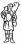

Cei Conferenza episcopale italiana
da pubblicazione allegata al n.671
di "Casabella" settembre 1999
|
 | Cei Conferenza episcopale italiana |
Progetti per la Chiesa di Santa Maria in Zivido di San Giuliano Milanese |
|
composizione della giuria |
|
|
presidente |
mons. Giancarlo Santi, in rappresentanza del segretario generale della Cei |
|
membri designati dal segretario generale della Cei |
mons. Luigi Trivero - don Giuseppe Busani - don Remigio Clozza - padre Tito Amodei |
|
membri designati dal cardinale arcivescovo di Milano |
Antonello Vincenti - Mauro Galantino |
|
membro designato dal Consiglio nazionale degli architetti |
Enrico Ampolo |
|
membro designato dal Consiglio nazionale degli ingegneri |
Achille Valentini |
|
supplenti |
Giorgio Trebbi - Federico Marconi - Ernesto Brivio |
|
progettisti segnalati dalla Cei |
Mario Bellini - Augusto Romano Burelli - Roberto Gabetti e Aimaro Isola - padre Costantino Ruggeri e Luigi Leoni - Francesco Venezia |
|
progettisti segnalati dalla Diocesi di Milano |
Paolo Favole - Giulio Marini e Giacomo Polin - Gianluigi e Giampiero Sala |
indice progetti - tuttozivido - indice chiesa - home

sito di propriet� della Associazione
Culturale Zivido
pierino.esposti@gmail.com